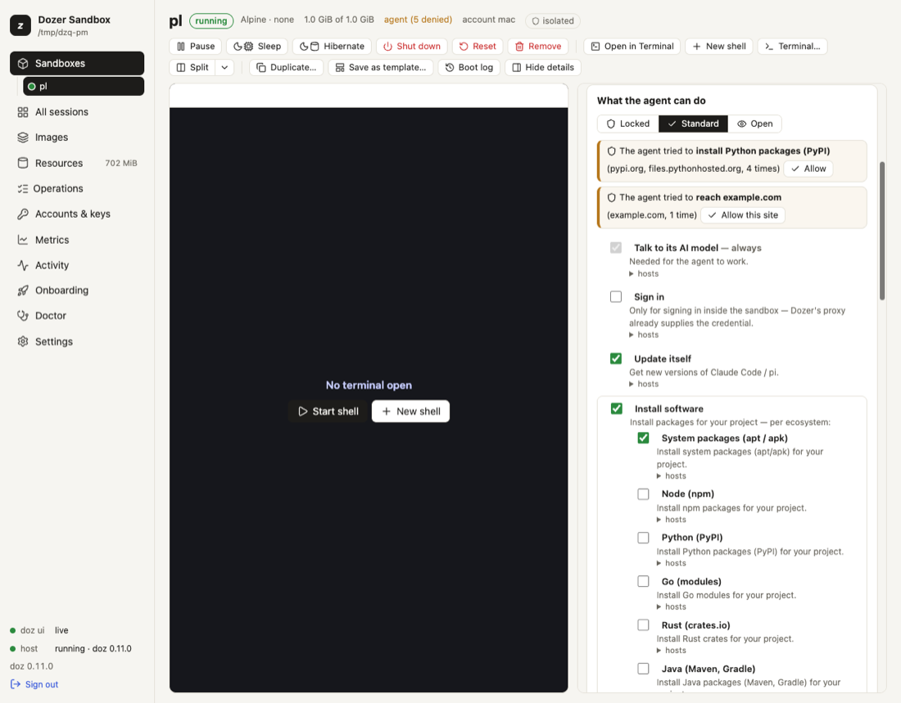

Chapter 10
What the agent can do: permissions and the network
A sandbox has no network card. Its only way out is a proxy in Dozer's host, on your Mac, which checks every connection against the sandbox's permissions — a short list of plain-language switches — and logs it.
On this page
A sandbox has no network card. Its only way out is a proxy in Dozer's host, on your Mac, which checks every connection against the sandbox's permissions — a short list of plain-language switches — and logs it. You decide what the agent may reach; the agent can't change it.
Concepts#
Permissions are what an agent may do, each a switch:
permission id what it allows in Standard Talk to its AI model modelAnthropic's API always on Talk to OpenAI model:openaiCodex's model ( chatgpt.com,api.openai.com) — Codexalways on in a Codex sandbox; never in another agent's Sign in sign-inClaude's sign-in pages, for signing in inside the sandbox off (Dozer supplies the credential) Update itself updatenew versions of Claude Code or pi on Install software — system packages install:systemapt / apk on Install software — Node, Python, Go, Rust, Java, Ruby, .NET install:node,install:python,install:go,install:rust,install:java,install:ruby,install:dotnet(install= all)that language's package registry your base's language Use GitHub githubclone and fetch code; Claude Code's plugins on Use GitHub as you github:as-yougit and gh signed in as you — read-only (GitHub as you) off, in every preset Push to GitHub github:pushalso push and change things on GitHub as you off, in every preset Send error reports error-reportsthe agent reporting its own crashes to its maker on Browse the web webany website off — the agent could send your code anywhere Sites you allow site:HOSTone host ( api.example.com, or*.example.com)none doz net permissionslists every permission with the exact hosts behind it in your version of Dozer.Presets: Locked (its AI model only), Standard, Open (everything, still logged). Your GitHub login is never part of a preset — not even Open: it's switched on by name, and a preset you choose later keeps it as it was. New sandboxes get the setting
defaults.permissions(standard).Stored by name. A sandbox remembers "Update itself", not a list of hosts, so when a new version of Dozer adds a host to a permission, every sandbox that has it gets it.
Live. A change applies to the sandbox's next connection — no restart — and is kept for its next start.
Everything is logged: host, verdict, rule, bytes. Never the contents.
See what the agent can do#
doz net my-app # the checklist, its sites, and what it was refused lately
doz net log my-app # the connection log
doz net log my-app --denied --followWhen the agent was refused something a permission would allow, doz net says so — "the agent tried to install Python packages (PyPI), 3 times" — with the command that allows it.
Change it — in the terminal#
doz net allow my-app install:python # switch a permission on
doz net allow my-app site:api.example.com # one site
doz net deny my-app github # switch one off
doz net deny my-app site:tracker.example.com
doz net allow my-app locked # or standard, open: a preset
doz net allow my-app web --yes # asks first without --yes
doz create my-app --allow install:rust,site:api.example.com,-error-reports--allow on create and up adds to the default: permission ids, -PERMISSION to remove one, site:HOST, or a preset name.
Change it — in the dashboard#
On a sandbox's page, the details' Network tab › What the agent can do shows the presets (Locked · Standard · Open) and the permissions as switches, with its sites below. Flip a switch and it applies at once; each permission's hosts unfold beneath it. When the agent was refused something, a line says so — "The agent tried to install Python packages (PyPI)" — with Allow (or Allow this site). Browse the web asks you to confirm first. Details: the rules and hosts shows every host behind the switches, and Edit policy… edits the raw rules with a preview of exactly what changes.

New sandbox shows the same switches (preset from the base you chose), and the Settings page edits defaults.permissions with them.
The network kinds#
--network on create (and network: in doz_project.yaml) chooses how a sandbox is connected:
--network | what it is |
|---|---|
agent | proxied, with the Standard permissions (the default for agent images) |
locked | proxied, Locked: the agent's model only |
open | proxied, Open: everything, still logged |
bake | proxied, package registries only (the default for lab, and what image preparation uses) |
nat | a real network card through macOS's NAT: not filtered or logged |
none | no network at all |
The proxied kinds have no network card: every connection, DNS included, goes through the proxy. nat and none are the virtual machine's make-up, fixed when the sandbox is made.
The raw rules#
Under the permissions there are rules, which you can still edit directly:
doz net policy my-app # show
doz net policy my-app --allow github.com --allow '*.githubusercontent.com'
doz net policy my-app --deny example.com --remove github.com
doz net policy my-app --preset open # replace with a preset: locked, bake, agent, openYour own rules win over a permission's hosts. A host your rules can't allow doesn't even resolve.
Settings#
| key | default | what it does |
|---|---|---|
defaults.permissions | standard | What a new sandbox's agent may do: standard, locked, open, or Standard with changes like +web,-error-reports. |
images.claude-code.network · images.pi.network · images.lab.network | agent · agent · bake | The network kind of a new sandbox of each image. |
defaults.nat_subnet | (a free one) | The subnet of a new nat sandbox ($DOZ_SUBNET). |
Limits and security#
- Browse the web and Open let the agent send your code and data anywhere. Prefer a
site:HOSTfor what the agent really needs. - A Dockerfile build runs outside this policy (in Apple's builder); the sandbox made from it doesn't. See Images and bases.
- IPv4 only; HTTP/2 isn't passed through on the hosts whose traffic the proxy inspects; UDP is refused (programs fall back to TCP).
- There are no general port forwards from your Mac into a sandbox. The one exception is a sign-in's callback, briefly — see Signing in from a sandbox.
- A sandbox made with an older version of Dozer keeps its rules;
doz net NAMEshows them as the permissions they amount to, and its first permission change stores them as permissions (anything no permission covers stays as your own site rules).
Troubleshooting#
| symptom | what to do |
|---|---|
| A package install fails | doz net NAME says what was refused and which permission allows it: doz net allow NAME install:python. |
| The agent can't reach your company's API | doz net allow NAME site:api.example.com. |
| A site works in your browser but not in the sandbox | doz net log NAME --denied shows the refused host — sites often use a second host for assets or APIs. |
| Claude Code can't update itself | update must be on (it is in Standard). |
| You need the whole web for a while | doz net allow NAME web, then doz net deny NAME web when done. |
Edit this page on GitHub · Chapter 10 of 25